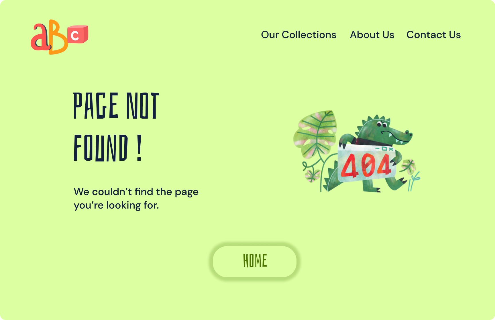
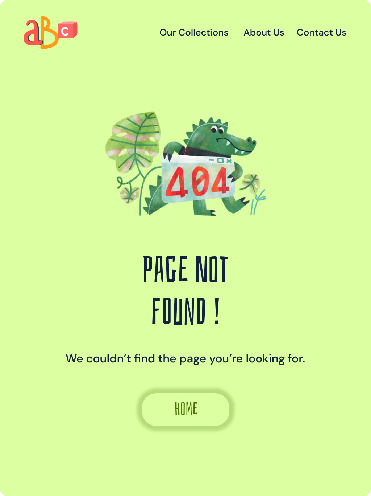

06 || Page 404 d'une maison d'édition jeunesse



Ce projet est une page d'erreur ou page 404 pour une maison d'édition jeunesse. Cette page indique à l'utilisateur que la page qu'il recherche n'existe pas ou n'est plus disponible.
Cible: parents et enfants
L'interface est très colorée mais reste lisible et accessible pour les utilisateurs. Les couleurs et la typographie des titres fait appel à l'enfance et à la nostalgie des parents